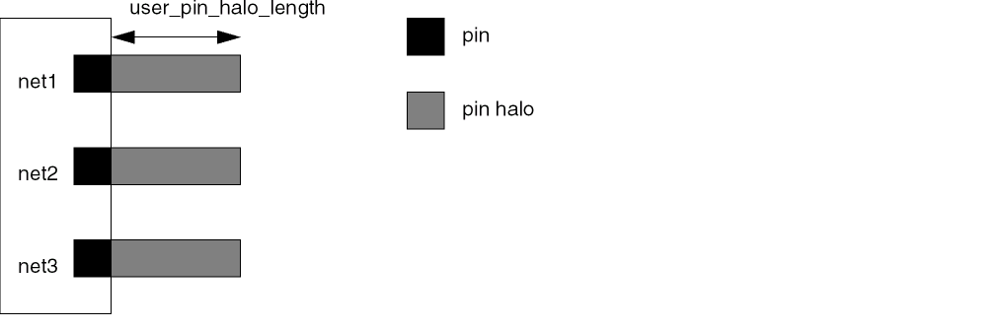

create_pin_halo_shapes
create_pin_halo_shapes [ -all ] [ -include_power_gnd_nets ] [ -inst_setd_instSetObj] [ -multi_pin_terminals ] [ -on_all_valid_layers ] [ -setd_setObj] [ -user_pin_halo_lengthf_length]
Description
Creates pin halo shapes on the terminals for all the nets in the design, for the selected nets, or on the specified instances. Power and ground nets are excluded from processing unless you include the -include_power_gnd_nets argument. The pin halo creates an area around a pin that is reserved for the net assigned to the pin. This prevents different-net routing from blocking access to the pin. Use delete_floating_trims to remove pin halo shapes after routing.

Arguments
Examples
The following command creates pin halo shapes on instance terminals of instances with names beginning with FINST.
create_pin_halo_shapes(-inst_set(find_instance -window_id 1 -name "FINST*"))
Related Topics
Return to top